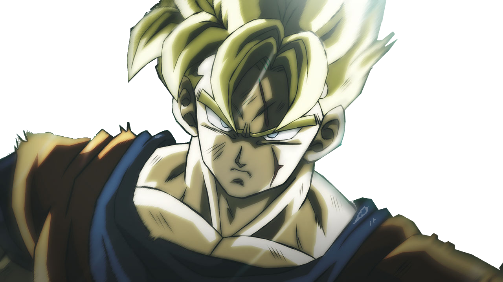

Future Gohan is the alternate timeline counterpart of Gohan that appears in the timeline where Goku dies from a heart virus and cannot be wished back with the Dragon Balls.
Like Gohan's present counterpart's personality as a child, in his childhood, he had lacked the fighting spirit of his father and as a fighter, he is mostly a coward and is a shy little boy, was gentle of heart, a pacifist in nature, but when enraged for seeing his friends hurt, his hidden dormant potential briefly revealed itself, he was also intensely focused in his studies until the time his father had died of the heart virus and the invasion of the androids and the murder of his friends especially his mentor, Future Piccolo which is the period of the time divergence and the period that dramatically changed him for the rest of his life.
